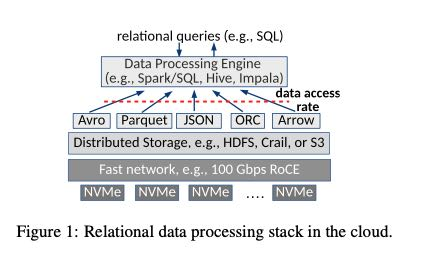
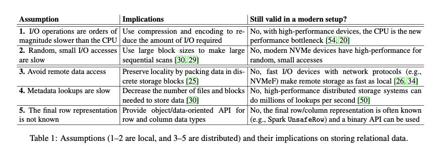
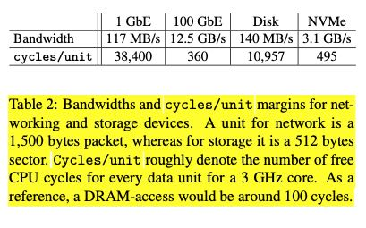
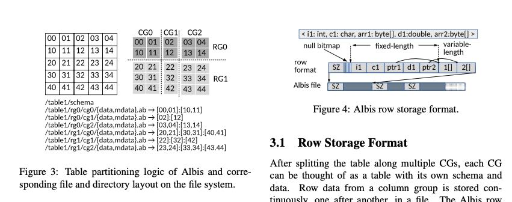

Albis: High-Performance File Format for Big Data Systems
文章有个假设就是现阶段CPU/IO之间的差距出现了变化，随着100Gbps网卡以及NVMe存储设备的出现，IO速度越来越高，反而CPU处理上出现瓶颈。所以文章认为在文件格式设计上，应该尽可能地减少CPU的处理时间（解压缩以及解码的时间），不使用复杂的编码/压缩方法，另外就是直接使用二进制存储，减少反序列化的时间。最终设计出来的文件格式好像没有什么意思，按照列进行切分，本质上还是row-based format. 每行上所有的column都是使用类似内存的二进制方式紧凑存储的。我觉得文章对我启发最大的点，在于如何说明CPU而非IO开始成为瓶颈。
下图是当前情况下大部分大数据系统的架构图，可以看到网卡变为100Gbps, 存储设备换成为NVMe

网卡的带宽提升了一个量级，NVMe的IOPS增大，随机访问速度和顺序访问速度相当（类似SSD），并且允许small access. 底层IO设备的变化，使得原来某些假设变得不再成立。

IOPS的变化可以通过cycle/io unit的比例来观察，假设cpu 1 cycle 可以处理1个network packet(1500byte)，可以处理1个disk sector(512 byte). CPU是3Ghz的话，那么cycles/unit可以看下图。作为参考，memory access的cycles/unit大约是100. 我觉得这个比较方式可以很显然地说明，我们几乎可以把remote disk file当做memory来使用了，虽然还不及cpu cache速度快。

另外一个关于IO误区就是，我们应该尽可能地读取大的block(128/256MB)，来减disk IO的时间。当然这个误区是基于disk的，到了SSD就不是这么回事了，到了NVMe时代就更是错了。我们还是不能一味地加大read block, 因为这会对内存分配带来很大的压力，对于cache来说也不太友好。
Albis File format 设计的几个点是：
- no compression or encoding. 降低对CPU的压力
- remove object ser/deser by providing binary API. 直接二进制读写
- keep metadata/data management simple. 数据管理更加简单，简化IO path.
最终出来的文件格式也比较简单，就是下面这个样子。每个RG上也会存在stats信息，然后也提供了谓词过滤。CG表示column group，有点类似hbase column family. RG表示row group, 数据写到一定量就会切分。不过我在想，如果CG0和CG1的column 大小相差很大的话，岂不是几个RG大小差别也很大。
